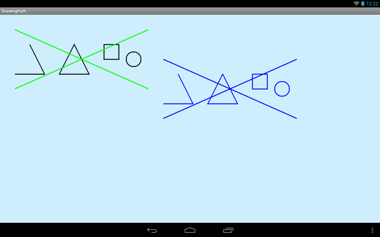
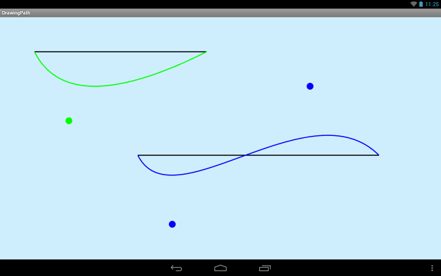
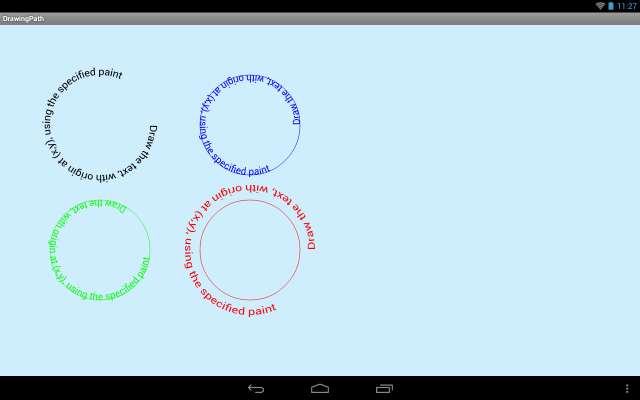

В этом уроке:
- работаем с Path
На прошлом уроке мы рассмотрели простые фигуры. Но кроме них мы имеем возможность создавать сложные фигуры с помощью объекта Path. Этот объект позволяет нам создать составную фигуру, состоящую из линий, кривых и простых фигур.
Создадим проект:
Project name: P1431_DrawingPath
Build Target: Android 4.0
Application name: DrawingPath
Package name: ru.startandroid.develop.p1431drawingpath
Create Activity: MainActivity
Простые фигуры
Кодим в MainActivity.java:
package ru.startandroid.develop.p1431drawingpath;
import android.app.Activity;
import android.content.Context;
import android.graphics.Canvas;
import android.graphics.Color;
import android.graphics.Paint;
import android.graphics.Path;
import android.graphics.RectF;
import android.os.Bundle;
import android.view.View;
public class MainActivity extends Activity {
@Override
protected void onCreate(Bundle savedInstanceState) {
super.onCreate(savedInstanceState);
setContentView(new DrawView(this));
}
class DrawView extends View {
Paint p;
RectF rectf;
Path path;
Path path1;
public DrawView(Context context) {
super(context);
p = new Paint();
p.setStrokeWidth(3);
p.setStyle(Paint.Style.STROKE);
rectf = new RectF(350,100,400,150);
path = new Path();
path1 = new Path();
}
@Override
protected void onDraw(Canvas canvas) {
canvas.drawARGB(80, 102, 204, 255);
// очистка path
path.reset();
// угол
path.moveTo(100, 100);
path.lineTo(150, 200);
path.lineTo(50, 200);
// треугольник
path.moveTo(250, 100);
path.lineTo(300, 200);
path.lineTo(200, 200);
path.close();
// квадрат и круг
path.addRect(rectf, Path.Direction.CW);
path.addCircle(450, 150, 25, Path.Direction.CW);
// рисование path
p.setColor(Color.BLACK);
canvas.drawPath(path, p);
// очистка path1
path1.reset();
// две пересекающиеся линии
path1.moveTo(50,50);
path1.lineTo(500,250);
path1.moveTo(500,50);
path1.lineTo(50,250);
// рисование path1
p.setColor(Color.GREEN);
canvas.drawPath(path1, p);
// добавление path1 к path
path.addPath(path1);
// смещение
path.offset(500,100);
// рисование path
p.setColor(Color.BLUE);
canvas.drawPath(path, p);
}
}
}Результат

Разбираем код.
Метод reset очищает path.
Метод moveTo – ставит «курсор» в указанную точку. Далее рисование пойдет от нее.
lineTo – рисует линию от текущей точки до указанной, следующее рисование пойдет уже от указанной точки
Таким образом мы нарисовали две прямые, получился угол.
Далее перемещаем точку и снова рисуем две линии, и закрываем подфигуру методом close. Методом moveTo мы сообщили, что начали рисовать новую подфигуру и эта точка является начальной, а когда вызываем close – рисуется линия от последней точки до начальной. Т.е. фигура закрывается. Таким образом, нарисовав две линии и вызвав метод close, мы получили треугольник.
Далее методами addRect и addCircle к объекту path добавляем квадрат и круг. Параметры тут стандартные, рассмотрены нами на прошлых уроках, кроме последнего: направления. Здесь есть два варианта: Path.Direction.CW (по часовой) и Path.Direction.CCW (против часовой). Т.е. вы задаете направление рисования линий квадрата или фигуры. Как это можно использовать, рассмотрим чуть позже.
Выводим получившийся path на экран ченым цветом.
Далее работаем с другим Path-объектом: path1. Добавляем в него две пересекающиеся линии. Выводим path1 зеленым цветом. Он у нас получился нарисован поверх path.
Теперь методом addPath добавляем path1 к path. Т.е. к Path можно добавлять не только фигуры и линии, но и Path-объекты. Смещаем итоговый path на 500 вправо и 100 вниз методом offset, меняем цвет на синий и выводим результат.
В документацие есть еще несколько методов add* для добавления фигур, которые мы прошли в прошлом уроке. С ними все аналогично.
Кривые
Path дает нам возможность рисовать не только прямые, но и кривые линии, а именно квадратичные и кубические кривые Безье. Википедия дает очень хорошие GIF-ки на эту тему.
Перепишем класс DrawView:
class DrawView extends View {
Paint p;
Path path;
Point point1;
Point point21;
Point point22;
public DrawView(Context context) {
super(context);
p = new Paint(Paint.ANTI_ALIAS_FLAG);
p.setStrokeWidth(3);
path = new Path();
point1 = new Point(200,300);
point21 = new Point(500,600);
point22 = new Point(900,200);
}
@Override
protected void onDraw(Canvas canvas) {
canvas.drawARGB(80, 102, 204, 255);
// первая линия
p.setColor(Color.BLACK);
canvas.drawLine(100, 100, 600, 100, p);
// точка отклонения для первой линии
p.setStyle(Paint.Style.FILL);
p.setColor(Color.GREEN);
canvas.drawCircle(point1.x, point1.y, 10, p);
// квадратичная кривая
path.reset();
path.moveTo(100, 100);
path.quadTo(point1.x, point1.y, 600, 100);
p.setStyle(Paint.Style.STROKE);
canvas.drawPath(path, p);
// вторая линия
p.setColor(Color.BLACK);
canvas.drawLine(400, 400, 1100, 400, p);
// точки отклонения для второй линии
p.setStyle(Paint.Style.FILL);
p.setColor(Color.BLUE);
canvas.drawCircle(point21.x, point21.y, 10, p);
canvas.drawCircle(point22.x, point22.y, 10, p);
// кубическая кривая
path.reset();
path.moveTo(400, 400);
path.cubicTo(point21.x, point21.y, point22.x, point22.y, 1100, 400);
p.setStyle(Paint.Style.STROKE);
canvas.drawPath(path, p);
}
}Результат

Рассмотрим сначала зеленую кривую.
Сначала рисуем черную линию (100,100) – (600,100). Делаем это только для наглядности, чтобы видеть, какой была бы линия, если бы мы из нее кривую не сделали.
Далее нарисуем небольшой круг в точке, которая будет использована для искривления линии. Делаем это тоже только для наглядности, чтобы видеть в каком направлении будет искривлена прямая. Координаты точки заданы в объекте point1.
Теперь рисуем кривую, используя Path. Становимся в точку (100,100) методом moveTo. Метод quadTo рисует кривую из текущей точки (100,100) в точку (600,100) (т.е. те же координаты, что и черной линии). А точка (point1.x, point1.y) позволяет задать изгиб кривой. Проще говоря, кривая будет отклонена в сторону этой точки.
Аналогично рисуем синюю кривую. Сначала черным цветом прямой оригинал. Затем точки отклонения. Затем искривляем. Метод cubicTo рисует кривую из текущей точки (400,400) в точку (1100,400). А точки (point21.x, point21.y) и (point22.x, point22.y) позволяют задать изгиб кривой. Проще говоря, кривая будет отклонена в сторону этих точек.
На получившемся результате видно, что кривые тянутся к точкам, которые показаны кружками. Для зеленой кривой, нарисованной методом quadTo – это одна точка. А метод cubicTo позволил нам задать две такие точки для синей линии.
Также обратите внимание, что при создании объекта Paint я использовал флаг Paint.ANTI_ALIAS_FLAG. Он сглаживает кривые при рисовании. Попробуйте его убрать и сравнить результат.
В качестве задания предлагаю вам вспомнить Урок 102 про касания и сделать приложение, в котором будет нарисована прямая, а касаясь экрана пальцем ее можно будет искривлять в сторону точки касания.
Относительные методы
Методы moveTo, lineTo, quadTo, cubicTo имеют одноименные аналоги, но начинающиеся с буквы r: rMoveTo, rLineTo, rQuadTo, rCubicTo. Отличие r-методов в том, что они используют не абсолютные, а относительные (relative – отсюда и буква r) координаты.
Например, если метод lineTo(100,200) рисовал нам линию от текущей точки в точку (100,200), то rLineTo(100,200) нарисует линию от текущей точки в точку, которая правее текущей на 100 и ниже на 200.
Текст по фигуре
Теперь посмотрим, как можно использовать направление рисования, которое мы задавали в методах addRect и addCircle
Перепишем DrawView:
class DrawView extends View {
Paint p;
Path path;
String text;
public DrawView(Context context) {
super(context);
p = new Paint(Paint.ANTI_ALIAS_FLAG);
p.setStrokeWidth(1);
p.setTextSize(20);
path = new Path();
text = "Draw the text, with origin at (x,y), using the specified paint";
}
@Override
protected void onDraw(Canvas canvas) {
canvas.drawARGB(80, 102, 204, 255);
// черный
path.reset();
path.addCircle(200, 200, 100, Path.Direction.CW);
p.setColor(Color.BLACK);
canvas.drawTextOnPath(text, path, 0, 0, p);
path.reset();
path.addCircle(500, 200, 100, Path.Direction.CCW);
// синий
p.setStyle(Paint.Style.FILL);
p.setColor(Color.BLUE);
canvas.drawTextOnPath(text, path, 0, 0, p);
p.setStyle(Paint.Style.STROKE);
canvas.drawPath(path, p);
// зеленый
path.offset(-300, 250);
p.setStyle(Paint.Style.FILL);
p.setColor(Color.GREEN);
canvas.drawTextOnPath(text, path, 100, 0, p);
p.setStyle(Paint.Style.STROKE);
canvas.drawPath(path, p);
// красный
path.offset(300, 0);
p.setStyle(Paint.Style.FILL);
p.setColor(Color.RED);
canvas.drawTextOnPath(text, path, 0, 30, p);
p.setStyle(Paint.Style.STROKE);
canvas.drawPath(path, p);
}
}Результат

Видим четыре текста, которые нарисованы в виде круга. Разберемся, как это сделано.
Добавляем к Path круг методом addCircle, используя направление по часовой - Path.Direction.CW. Далее методом drawTextOnPath рисуем черным цветом текст по контуру path-фигуры. Как видим, текст идет по часовой стрелке. Сам круг при этом не рисуется.
Далее очишаем path и добавляем к нему новый круг, используя направление против часовой Path.Direction.CCW. В нем текст пойдет против часовой стрелки. И синим цветом рисуем и текст и круг.
А теперь рассмотрим параметры drawTextOnPath на зеленой и красной фигурах. Будем использовать тот же path, который нарисовали синим цветом. Только методом offset будем перемещать его на новое место.
У метода drawTextOnPath третий параметр означает длину отступа от старта фигуры. В зеленом круге мы задали этот отступ равным 100. Видно, что по сравнению с синим кругом, текст здесь имеет отступ по окружности от начала.
Четвертый параметр метода drawTextOnPath позволяет указать отступ текста от фигуры. В красном круге мы указали его равным 30. И видим, что текст удален от круга наружу. Если задать отрицательное значение, то текст будет смещен внутрь.
Обратите внимание, что в Path вообще не используется объект Paint. Т.е. Path - это просто фигура. И она ничего не знает про то, какой кистью она будет нарисована. Кисть задается и используется уже непосредственно при рисовании фигуры на канвасе.